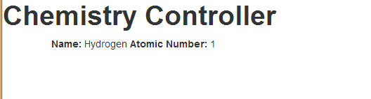

AngularJS is a Javascript MVC framework from the fine folks over at Google. The focus of Angular is building complex HTML based client applications. Its design philosophy is data first, where your data will be updating the DOM. Contrast this to a framework like JQuery where the DOM will update your data.
This is the second in a series of posts on AngularJS where we are using Chemistry data from the periodic table to help us understand the framework. The others posts are
Note: AngularJS does not allow for more than one ng-app directive. When I have multiple angular posts on the home page of my blog, only one application will work. I need to refactor the entire site to account for this. All of that to say this, you are best clicking on a single article so you can see the pages in action.
In general, just binding text boxes on a page may be able to create a simple calculator, but it is not what the web of 2013 and beyond is about. We want our pages to interact with backend data stores, we want to display this information on the page and send it back to the server so it is there the next time we view the page.
Angular is really a Model View Controller (MVC) JavaScript library. The model is our data, the view is the presentation of this data and the controller is responsible for the marshalling between the two. In angular, this is done via the scope, which is a glorified object property bag available within your page. The first responsibility of the Controller is to create this scope object. The scope is then how you communicate with the view. The view is able to bind to properties and functions on the scope. It is also able to call functions on the scope. It is important to realize that the scope exposes the model to the view, however the scope is NOT the model. The model is updated, either via two way data binding on the scope, or functions on the scope that the view calls to update the data. So, if you are going to be doing a lot with Angular, say hello to your little friend, $scope.
Let's take a look at the pieces needed to bring this together. First off, harking back to a time long, long ago, I am going to be working with information from the Periodic Table from Chemistry during these demos, so you will be seeing chemistry naming as we going along, so let us alleviate the confusion up front.
First, we want to take a look at our HTML.
We are going to use Twitter bootstrap for some down the road reasons so we are going to add that CSS reference.
Second, we are adding a reference to chemistryApp.js. This is the starting script that identifies our Angular module. We are going to call our Application chemistryApp.
chemistryApp.js
'use strict';
var chemistryApp = angular.module('chemistryApp', []);
Now that our chemistryApp.js file is identified, we add a ng-app directive to our body tag. That tells Angular that
chemistryApp will be responsible for our page.
Next, we want to create the controller. The controller will be responsible for managing data for the HTML view.
Usually, controllers are associated with DIVs. First, we will create our controller called
chemistryController.js<
We reference our module, chemistryApp, from ourApp.js file. We then identify the name of the controller,
chemistryController and then have a second parameter, which is a function, that is our actual controller.
We want to be sure to pass in any parameters our controller will need. Almost all controllers will require the
$scope variable, since the controller interacts with the view via this, so almost all of our controllers will at a
minimum have this.
As of now, our controller skeleton is built and ready to go, it just not doing anything at the moment
chemistryController.js
'use strict';
chemistryApp.controller('chemistryController',
function chemistryController($scope) {
}
);
We go and add our controller JavaScript file to our HTML with a script tag, but we have to update our HTML to identify where the controller will function. This is done via the ng-controller directive. The syntax is as so
<div class="container" id="ngChem1" ng-controller="chemistryController">
</div>
And for now, our HTML looks like
<!DOCTYPE html>
<html lang="en">
<head>
<title>Controller Demo 1</title>
<link rel="stylesheet" href="/css/bootstrap.min.css"/>
</head>
<body ng-app="chemistryApp">
<h1>Chemistry Controller</h1>
<div class="container" id="ngChem1" ng-controller="chemistryController">
</div>
<script src="angular.min.js"></script>
<script src="chemistryApp.js"></script>
<script src="chemistryController.js"></script>
</body>
</html>
This page renders, but does not do anything. Mostly as a result of us telling it to do nothing! In general though, these three steps are the basis of an Angular application.
As previously mentioned, the $scope variable is the glorified property bag we use to populate data. So within our
controller, we can go and set some values for display in our view/web page. In our example, that will be the name of a
chemical element and it's atomic number, Hydgroen and 1. Our controller function now looks like
chemistryController.js
'use strict';
chemistryApp.controller('chemistryController',
function chemistryController($scope) {
$scope.elementName = 'Hydrogen';
$scope.atomicNumber = 1;
}
);
Now, we can have the values from our scope value inject into our HTML markup. This is done via our friend, the magical curly braces. It is as simple as
<b>Name:</b> {{elementName}} <b>Atomic Number:</b> {{atomicNumber}}
The value we set in our controller are automatically displayed.

You can see these code samples in action at the companion site for this blog series, http://angularPeriodic.azurewebsites.net
Introducing AngularJS Controllers
You can download or view the code on Github, https://github.com/jptacek/AngularPeriodic/